2.5 Выработка критериев прохождения стажировки по программе «500 ученых»
Наука и технологии рассматриваются как важные движущие силы развития Казахстана, и страна предпринимает усилия для определения приоритетов и поддержки их роста: имеет амбициозную программу по повышению своей технологической конкурентоспособности на мировом рынке [1], активно продолжает инвестировать и уделять приоритетное внимание научным исследованиям, образованию и подготовке научных кадров.
В послании народу Казахстана от 1 сентября 2020 года Президент РК Касым-Жомарт Токаев поручил правительству обеспечить ежегодную стажировку в ведущих научных центрах мира для 500 ученых [2]. В первом полугодии 2023 г. были присуждены 328 грантов: ученые проходят стажировку в 137 научных центрах в 26 странах мира со сроком до 12 месяцев. Программа администрируется ЦМП «Болашак». В приоритетные направления научных исследований входят «Информационные и коммуникационные технологии», «Образование», «Медицина», «Национальная безопасность и оборона» [3].
Целью данной аналитической работы является выработка наукометрических критериев для прохождения стажировки ученых по программе «500-ученых» и проекта регуляторного инструмента на основе обзора существующих научных стажировок и наукометрических критериев.
2.5.1 Международный опыт
Международные стипендии предлагают исследователям, ученым и специалистам возможность участвовать в передовых исследованиях, приобретать новые навыки, сотрудничать с экспертами и вносить вклад в свою область. Стипендии предлагают также множество преимуществ студентам и исследователям, обеспечивая финансовую поддержку, международный опыт, возможности карьерного роста и признание.
Во многих зарубежных странах доступно множество программ научных стажировок для своих граждан. Некоторые страны, например, Германия, предлагают программы стажировок бесплатно или по очень низкой цене [4]. США, Великобритания, Австралия, Япония и Швейцария дают возможность ученым пройти полностью финансируемые стажировки [5].
В США, например, такие стажировки и исследовательские программы для своих граждан предоставляют отдельные организации и учреждения: Национальное аэрокосмическое управление (NASA), Национальное управление по океанам и атмосфере (NOAA), Национальный институт здоровья (NIH), Google Research и многие другие. Крупнейшие университеты, так как, например, Harvard University, Massachusetts Institute of Technology, Stanford и другие предлагают варианты стажировок и направлений исследований.
Продолжительность научных стажировок в среднем занимает от нескольких недель до нескольких месяцев, но может занять и год. Обучающиеся получают стипендии и возможность участия в научных исследованиях [6-14].
Стоит учитывать, что некоторые фонды и организации тоже предоставляют гранты и стипендии, компенсирующие расходы в части научных исследований и стажировок. Например, программы стипендий National Science Foundation (NSF) и National Institutes of Health (NIH), в рамках которых предпочтение при финансировании отдается молодым исследователям [15]. Кроме того, многие агентства и органы правительства США, такие как FBI, EPA, FDA и другие, предоставляют программы стажировок и исследований для своих граждан.
В популярной среди исследователей Великобритании также существует множество программ научных стажировок и исследований, как для своих ученых, так и для исследователей и ученых со всего мира. Приведем некоторые известные программы для ученых:
1) Newton International Fellowship – программа, финансируемая Фондом Ньютона, предоставляет исследователям из разных стран возможность провести двухгодичную стажировку в британских университетах и исследовательских центрах [16]; 2) Research Councils UK (RCUK) включает 7 исследовательских советов, предоставляющих финансовую поддержку исследованиям и стажировкам в разных областях, включая естественные науки, общественные науки и искусство [17]; 3) Chevening Fellowships предоставляет возможности для ученых и профессионалов со всего мира для проведения исследований и стажировок в Великобритании; 4) Wellcome Trust поддерживает исследования в области медицины и здравоохранения, предоставляя финансовую поддержку и стажировки исследователям [18].
Нидерланды также известны своими программами стажировок. Особое внимание уделяется сотрудничеству с промышленностью и исследовательскими институтами [19]. Программы PhD в Швейцарии ориентированы больше на независимые исследования и имеют хорошую финансируемость программ стажировок с возможностями для сотрудничества и налаживания связей [20]. Япония предлагает программы стажировок через университеты и исследовательские институты.
В каждой из этих стран реализуются программы, подобные программе «500 ученых», по поддержке ученых как учебными, так и отдельными организациями.
Одним из самых результативных примеров международного опыта отправки студентов в зарубежные стажировки можно считать многолетнюю работу стран-членов Европейского Союза (ЕС). Благодаря различным программам, таким как Erasmus+, европейские студенты имеют возможность учиться или стажироваться в других странах. Сама программа Erasmus+ была создана в 1987 году по инициативе Еврокомиссии и уже более 35 лет способствует обмену студентами и преподавателями между университетами стран-членов Евросоюза, а также других стран [21]. Сроки обучения и стажировки могут составлять от 3 месяцев до 1 года, в сумме до 2 лет [22].
Некоторые страны активно отправляют своих студентов за границу на стажировки или академические обмены.
В последние десятилетия правительство Китая совместно с университетами активно отправляет своих студентов за границу на стажировки и получение международного опыта в рамках политики по развитию глобальной компетентности [23. Это позволяет китайским университетам быстро подниматься в мировых рейтингах по институциональному направлению [24]
Важно отметить, что для повышения навыков своих студентов и содействия их личному и профессиональному развитию правительство Китая и раньше запускало различные стипендиальные программы и инициативы. Например, Китайский стипендиальный совет (CSC) и стипендия «Один пояс, один путь», предоставляют студентам финансирование для обучения и стажировок за границей [25]. Зарубежные стажировки организовываются в самые разные страны, при этом самым популярным выбором являются США, Великобритания, Австралия, Канада и другие западные страны [26]. Однако Китай расширил свое партнерство и со странами Азии, Африки и Латинской Америки [27]. Основной фокус в обменах приходится на стажировки в областях науки, технологий, инженерии и математики (STEM), поскольку эти области считаются решающими для экономического и технологического развития Китая. Многие китайские университеты установили партнерские отношения и соглашения об обмене с зарубежными учреждениями, что облегчает участие их студентов в международных стажировках и исследовательских проектах [28]. Продолжительность этих стажировок может варьироваться, но обычно соответствует академическому графику – от нескольких месяцев до года и более. Следует уточнить, что китайское правительство и университеты ожидают возврата инвестиций в виде возвращения студентов в Китай с новыми навыками, знаниями и международными перспективами, которые могут способствовать экономическому и технологическому росту страны [29].
Согласно отчету, опубликованному в марте 2022 года ведущим агентством по обучению за рубежом в Китае EIC Education, основным выбором китайских студентов, обучающихся за рубежом (81,2%), остаются магистерские программы [30]. Однако, учитывая времена закрытых границ в условиях пандемии, китайские студенты стали отдавать предпочтение обучению на родине. Отметим, что популярность обучения за границей падает [31], поскольку Китай сам становится более привлекательным местом для обучения, а уровень региональных университетов в материковом Китае и Гонконге стал действительно высоким.
Южная Корея также активно поддерживает отправку своих студентов на зарубежные стажировки и академические обмены, чтобы расширить их опыт и улучшить качество образования. В этой стране правительство активно поддерживает и обеспечивает финансовую помощь студентам, отправляющимся на зарубежные стажировки через различные программы и стипендии, такие как «Global Korea Scholarship» (GKS) [32]. Многие южнокорейские университеты и институты являются партнерами иностранных учебных заведений, благодаря чему и предоставляют своим студентам возможности обмена [33]. Поскольку Южная Корея является лидером в сфере технологий, многие студенты выбирают зарубежные стажировки и образование в областях, связанных с информационными технологиями, инженерией и наукой. Многие из них возвращаются на родину и применяют знания и опыт, полученные за рубежом.
Следующим примером является Программа докторантуры за рубежом «Корейского фонда перспективных исследований». Это стипендиальная программа, предоставляющая корейским студентам стипендии на углубленное обучение за рубежом по программам докторантуры в конкретной области социальных и естественных наук, информационных технологий и коммуникаций. Цель программы – превратить выдающихся студентов в ученых мирового уровня, а также в движущую силу национального развития.
За последние тридцать лет Фонд поддержал сотни молодых ученых, получивших докторскую степень в престижных университетах мира, а также тысячи студентов колледжей в Корее. Стипендиальная программа является высококонкурентной, срок предоставления стипендии приходится на июнь-июль ежегодно [34]. «Фонд Лотте» также предлагает свои магистерские/докторские программы обучения за рубежом [35].
Южнокорейские студенты могут подать заявку на участие в международных программах магистратуры и докторантуры в зарубежных университетах. Процесс подачи заявки обычно включает в себя предоставление транскриптов, результатов тестов, рекомендательных писем и заявления о целях.
Правительство Бразилии выступает с такими инициативами, как программа «Science Without Borders» («Наука без границ»), запущенная в 2011 году с целью содействия интернационализации бразильской науки и технологий, инновациям и конкурентоспособности посредством международной мобильности. Для проведения исследований и стажировок, особенно в области науки, технологий и инженерии, благодаря программе, студенты уезжают в ведущие университеты и исследовательские институты США, Канады, Великобритании, Германии, Франции и Австралии [38]. Более 100 000 бразильских студентов и исследователей выехали за границу на обучение и проведение исследований в областях STEM, что, по убеждению правительства Бразилии, будет содействовать развитию стратегических областей – энергетики, биотехнологии, нанотехнологии и информационных технологий. Программа финансировалась правительством Бразилии и реализовывалась в партнерстве с университетами и исследовательскими институтами в Бразилии и за рубежом [39]. Стоить отметить, что программа столкнулась с некоторыми проблемами, включая отсутствие координации между бразильскими и зарубежными учреждениями, были трудности с получением виз и знанием языка, а также отсутствием последующей поддержки студентов и исследователей по их возвращению в Бразилию [40]. Несмотря на это, программа была расценена как успешная с точки зрения увеличения числа бразильских студентов и исследователей с международным опытом и содействия интернационализации бразильской науки и технологий.
Многие бразильские университеты тоже имеют активные программы академического обмена с университетами других стран. Бразилия занимает восьмое место среди стран происхождения иностранных студентов, обучающихся в университетах США: например, в 2021–2022 учебном году в США обучались 14 897 студентов из Бразилии [36]. Интересно то, что Бразилия отправляет за границу в два раза больше своих студентов, чем принимает [37].
Российская Федерация предлагает государственные программы, которые предоставляют студентам стипендии и финансовую помощь для обучения и стажировок за рубежом, например, «Глобальное образование» (Global Education Program). Цель данной программы – предоставление гражданам России уникальной возможности обучения в магистратуре, докторантура в ведущих зарубежных вузах, предоставляющих образовательные программы, соответствующие самым высоким международным стандартам. Программа покрывает стоимость обучения за рубежом (включая дополнительные сборы), медицинское страхование (UHIP), включает ежемесячное пособие на проживание, питание, книги и научную литературу, а также расходы на проезд к месту проживания и обратно в университет. В приоритете программы пять направлений обучения: наука, инженерное дело, медицина, образование и менеджмент – всего предлагается 32 специализации в 227 ведущих зарубежных вузах в 27 странах [41].
Любой гражданин РФ, имеющий высшее образование (не ниже степени бакалавра), может получить государственный грант на обучение в ведущем университете мира. При этом студенты обязуются вернуться в Россию и проработать не менее трех лет в организации, указанной в профиле программы. Продолжительность программы – с 2014 по 2025 гг. На ее реализацию было выделено 3,76 млрд руб., лимит на одного участника – до 2,76 млн руб. в год, включая оплату стоимости курса и сопутствующих расходов. Результатом программы должна быть подготовка высококвалифицированных кадров для организаций-партнеров, в том числе организаций территорий опережающего социально-экономического развития Дальнего Востока и Восточной Сибири, с целью ускорения модернизации и внедрения новейших технологий социальных реформ [42].
Стоит отметить, что до 2022 года международные организации (например, Erasmus+) и программы обмена между странами СНГ также поддерживали мобильность студентов и предоставляли возможность для стажировок и обучения за границей.
В Индии с каждым годом растет число студентов, которые заинтересованы в международных стажировках. Программы обучения и международные стажировки имеют высокий уровень конкуренции для индийских студентов, так как они дают возможность получить глобальную известность и преимущества в резюме кандидатов [43].
Одна из международных программ стажировок – «Якокка» (Iacocca International Internship) – отправляет студентов работать или заниматься исследованиями за границей посредством полностью финансируемых летних стажировок, которые сочетают в себе реальный опыт с культурным погружением [44]. Программа стажировок МАГАТЭ предоставляет, студентам или выпускникам возможность получить практический опыт работы в соответствии с их интересами, а также познакомить их с работой Агентства и ООН. Продолжительность стажировки обычно составляет не менее трех месяцев и не более одного года. Кандидаты должны быть не моложе 20 лет и пройти не менее трех лет очного обучения в университете или аналогичном учреждении для получения степени бакалавра.
Основные международные стажировки для индийских студентов в США, Германии, Великобритании, Австрали и других странах:
1. S N Bose Scholarship Programs
2. USC Summer Internships
3. Khorana Program
4. DAAD Internships
5. SUR internship programme
6. Association (AFSA) Communication Internship
7. World Bank Internships
8. MacGeorge Fellowships And Honorary Fellowships
9. Insight Collaborative Fellowship
10. Mitacs Globalink Research Internship
11. UNIL Summer Undergraduate Research Program
12. RTC Summer Research Program for Undergraduates
13. UTokyo Amgen UG scholarship
14. Google Internships
15. Charles Wallace India Trust Visiting Fellowship
16. Nanyang Technological University (NTU) Singapore-India Connect. [45]
Для подачи заявок используются такие платформы, как Letsintern и Internshala. Они доступны и предлагают индийским студентам многочисленные национальные и международные стажировки.
Ниже приведен список наиболее известных международных исследовательских стипендиальных программ по различным дисциплинам:
1. «Стипендиальная программа Фулбрайта» предлагает широкий спектр исследовательских возможностей для ученых, исследователей и специалистов из разных стран. Обеспечивает финансирование исследований, преподавания и сотрудничества в принимающих учреждениях по всему миру [46].
2. Программа «Мероприятия Марии Склодовской-Кюри» (MSCA): финансируемая ЕС, поддерживает исследователей на всех этапах их карьеры. Программа предлагает стипендии для мобильности, обучения и совместных исследований в европейских странах. Ее уникальность заключается в том, что она объединяет исследовательские центры, университеты и частные компании в разных областях по всему миру. Она была введена в рамках Горизонта 2020, программы Европейского союза по исследованиям и инновациям, и продолжила свою работу и в следующей программе Европейского союза – «Горизонт Европа», запущенной с 2021 года. [47].
3. «Исследовательские гранты DAAD»: программа предлагает различные исследовательские гранты и стипендии для международных исследователей, заинтересованных в обучении в Германии. Охватывает различные дисциплины и обеспечивает финансирование исследовательских проектов, постдоков и приглашенных ученых.
4. Исследовательская стипендия «Фонда имени Александра фон Гумбольдта» поддерживает опытных исследователей со всего мира в проведении исследований в Германии. От Казахстана в программе участвовал 1 стипендиат за последние 3 года, за весь период – 10 стипендиатов.
5. «Японское общество содействия науке» (JSPS) предлагает стипендии для проведения исследований в Японии. Включает возможности для краткосрочных и долгосрочных исследовательских визитов. От Казахстана – 1 стипендиат за последние 3 года.
6. «Национальные институты здравоохранения» (NIH) предлагает исследователям и ученым различные программы стипендий для проведения биомедицинских и медицинских исследований в США.
7. «Стипендии правительственной программы подготовки исследователей Австралии» (RTP) предлагаются иностранным аспирантам для обучения в этой стране. Обучение доступно в участвующих в программе университетах по широкому спектру дисциплин.
8. План стипендий и стипендий Содружества (CSFP): предлагает стипендии гражданам стран Содружества (более 56 стран со всех континентов) для обучения или проведения исследований в других странах-членах. Международная стипендиальная программа была создана для поддержки высшего образования и обмена студентами, преподавателями и профессионалами между странами-членами Содружества наций. План стипендий и стипендий Содружества включает в себя разнообразные стипендиальные возможности и программы (обмен студентами, студенческие стипендии, программы для исследователей, программы профессионального развития)
9. «Стипендии Правительства Швейцарии»: предлагаются международным исследователям и ученым за выдающиеся достижения для проведения исследований в Швейцарии. Доступно для докторантов и постдокторантов. За последние 3 года от Казахстана стипендиатов не было.
10. «Стипендии Американской ассоциации развития науки» (AAAS): учреждает стипендии ученым и инженерам для сотрудничества с федеральными агентствами США и офисами Конгресса.
11. «Стипендии Института перспективных исследований устойчивого развития Университета ООН» (UNU-IAS): предлагает стипендии исследователям и политикам в области устойчивого развития.
12. «Программа стипендий Knight-Hennessy Стэнфордского университета»: осуществляет полное финансирование аспирантуры в Стэнфордском университете, включая исследовательские стипендии в различных дисциплинах.
13. «Стипендия Рэдклиффа в Гарвардском университете»: дает возможность получения стипендий для ученых и людей творческих профессий.
14. Жилищные гранты и стипендии «Фонда Гетти» предлагаются ученым в различных областях искусства и гуманитарных наук и людям творческих профессий.
Создание и управление программой международной стажировки требует тщательной подготовки и учета разнообразных факторов, но при правильном подходе она может стать ценным инструментом для обмена знаниями и опытом между странами и учреждениями. Разработаны общие рекомендации и требования к программам международных стажировок.
Квалификационные требования варьируются в зависимости от программы, но могут включать такие факторы, как академическая успеваемость, знание языка и зачисление на соответствующую университетскую программу.
Процесс подачи заявки на участие в международных программах обычно включает в себя подачу заявки по форме, стенограмм и других подтверждающих документов. Для некоторых программ может также потребоваться одобрение преподавателя-консультанта [48].
Продолжительность стажировки может варьироваться от нескольких месяцев до года [49].
Обязанности стажера могут варьироваться в зависимости от программы и принимающей организации, в частности, могут включать участие в подготовке исследований и документов, проведение исследований и обзоров существующей литературы, а также другие задачи [49].
Место прохождения стажировки: международные стажировки могут проходить в различных странах и регионах по всему миру [50].
Важно отметить, что конкретные требования и рекомендации могут варьироваться в зависимости от программы и принимающей организации. Кандидаты должны внимательно ознакомиться с информацией о программе и с требованиями прежде, чем подавать заявку.
2.5.2 Ключевые критерии и требования зарубежных программ стажировок
Критерии и требования зарубежных программ могут сильно различаться в зависимости от принимающей страны, организации и сферы интересов. Ниже предлагается перечень некоторых общих ключевых критериев и требований к программам зарубежных стажировок.
1. Образование. Большинство программ требуют, чтобы кандидаты на время подачи заявки были зачислены на программу обучения (бакалавриат, магистратура или докторантура/аспирантура) в признанном учебном заведении. Некоторые программы могут иметь особые академические требования или предварительные условия, связанные с областью обучения.
2. Знание языка. В зависимости от принимающей страны и организации кандидатам может потребоваться продемонстрировать знание языка, на котором говорят в рабочей среде (например, английского, французского, испанского и т. д.). Уровень владения языком можно оценить с помощью стандартизированных тестов (например, TOEFL, IELTS) или собеседований.
3. Материалы для применения. Обычные материалы заявки включают резюме, сопроводительное письмо и академические справки. Для некоторых программ могут потребоваться рекомендательные письма, образцы написания академических эссе или заявление о целях стажировки.
4. Квалификационные требования. Программы стажировок часто имеют конкретные критерии отбора, основанные на таких факторах, как национальность, возраст и академический уровень. Некоторые программы могут быть ограничены определенными регионами или странами.
5. Продолжительность и доступность. Необходимо определить продолжительность программы стажировки (например, лето, семестр, год) и ее соответствие графику и академическим обязательствам кандидата.
6. Область интересов. Необходимо изучить направление программы стажировки и убедиться, что оно соответствует академическим и карьерным интересам кандидата. Некоторые программы открыты для широкого спектра областей, тогда как другие могут быть более специализированными.
7. Рабочая виза и юридические требования. Необходимо ознакомиться с визовыми и юридическими требованиями принимающей страны. Для некоторых стажировок может потребоваться рабочая виза или другая документация.
8. Финансовые соображения. Следует оценить затраты, связанные со стажировкой, включая транспортные расходы, расходы на жилье, страховку и проживание. Необходимо заранее проверить, предоставляет ли программа стипендии, пособия или другую финансовую поддержку.
9. Собеседование, или процесс отбора. Некоторые программы могут потребовать собеседование в рамках процесса отбора. Необходима подготовка к обсуждению прошлого опыта и в целом мотивации кандидата.
10. Медицинское страхование и страхование путешествий. Многие программы требуют, чтобы участники имели медицинскую страховку и туристическую страховку во время стажировки. Необходимо иметь соответствующую страховку для покрытия потенциальных медицинских расходов или расходов, связанных с поездкой.
11. Культурная адаптивность. Способность адаптироваться к новой культуре, рабочей среде и условиям жизни в принимающей стране.
12. Безопасность. Следует изучить ситуацию с безопасностью в принимающей стране и меры организации по обеспечению благополучия участников.
13. Сроки подачи заявок. Необходимо тщательно изучить каждую интересующую программу стажировки для определения своего соответствия критериям и требованиям. Это можно сделать на официальных сайтах и/или обратившись к координаторам программы за разъяснениями. Следующим шагом является тщательная подготовка материалов заявки, чтобы максимизировать шансы для получения места для стажировки.
2.5.3 Рекомендации по изменению критериев прохождения стажировки по программе «500 ученых»
Таблица 2.5.8. Рекомендации для изменения критериев
|
№ |
На данный момент |
Предложение |
Обоснование |
|
1 |
Наличие безусловного приглашения (за исключением финансовых условий) принимающей на стажировку зарубежной организации
|
Дополнить безусловное приглашение с указанием сроков, названия вуза/ научного подразделения, на базе которого этот проект будет проводиться, а также имен(и) коллег(и), который на месте принимает соискателя |
Следовать опыту DAAD DAAD — крупнейшая в мире финансирующая организация по международному обмену студентами и исследователями. С момента основания DAAD в 1925 году около 2,9 миллиона ученых в Германии и за рубежом получили финансирование DAAD. |
|
2 |
Общий стаж работы не менее 3 (трех) лет, в том числе последние 12 (двенадцать) месяцев в выбранной области специализации |
Уменьшить общий стаж: не менее 2 (двух) лет |
Дать возможность молодым ученым принять участие в конкурсе |
|
3 |
Наличие действительного официального сертификата о сдаче экзамена по КАЗТЕСТ с результатом не менее уровня В1 |
Поднять уровень на В2 |
Казахский язык изучается в школе на протяжении 11 лет и на уровне бакалавриата. На уровне общего среднего образования требования к знаниям, навыкам, умениям обучающихся по предмету «Казахский язык и литература» определены в соответствии с CEFR – Общеевропейской системой оценки уровня владения иностранным языком (уровень В2-С1) *
|
|
4 |
Необходимый минимальный уровень знания иностранного языка для претендентов на присуждение международной стипендии «Болашак» IELTS: 5.0 из 9.0
|
Поднять до IELTS: 6.0 из 9.0 При этом не требовать сертификат у кандидатов, ранее прошедших обучение на английском языке по программам магистратуры и докторантуры за рубежом, где языком обучения является английским. |
С целью экономия времени и финансовых ресурсов претендентов. Английский язык изучается с начальных классов, в некоторых школах обучение проходит на английском языке. Для местной докторантуры** IELTS: 5.5, магистратуры*** IELTS: 6.0, следовательно, для выезда зарубеж уровень должен быть выше |
|
4 |
|
Добавить: Компоненты стажировки Стажировка должна состоять из 2-х компонентов: 1) образовательный компонент (10 часов обучения); 2) исследовательский компонент (30 часов) |
Учитывая, что стажировка для ученых, образовательный компонент необходим для повышения исследовательских навыков (к примеру, практическое использование программ, таких как STATA, SPSS, NVivo и другие) |
|
5 |
|
Предоставление сертификата о прохождении стажировки |
Доказательство успешного прохождения научной стажировки |
|
6 |
|
Написание краткого мотивационного письма (500 слов), включающего цели, задачи, сроки, потенциальные результаты и методы/пути распространения результатов |
Результаты исследования/проекта должны быть распространены во избежание дублирования проекта в будущем другими претендентами |
|
7 |
|
Желательно Организовать семинар/ы для кандидатов |
После завершения стажировки обучить своих коллег, поделиться своими знаниями |
* Об утверждении типовых учебных программ по общеобразовательным предметам и курсам по выбору уровней начального, основного среднего и общего среднего образования. Приказ Министра просвещения Республики Казахстан от 16 сентября 2022 года № 399. Зарегистрирован в Министерстве юстиции Республики Казахстан 23 сентября 2022 года № 29767.
** Перечень документов необходимых для поступления в докторантуру https://egov.kz/cms/ru/articles/doktorant
*** Требования, предъявляемые для поступления в магистратуру https://egov.kz/cms/ru/articles/magestr
Рекомендации по улучшению администрирования научных стажировок
Ниже приведены проекты платформ и инструментов с целью улучшения процесса выбора научной организации для стажировки, оценки качества стажировки и обратной связи, а также измерения воздействия исследований стажировки на исследовательскую деятельность и карьерный рост
Проект 1. Платформа для поиска программ стажировок.
Цель: разработать онлайн-платформу для поиска подходящих научных стажировок для учёных, где (а) можно сопоставить навыки и интересы ученых с подходящими возможностями стажировки; (б) имеются системы для координации времени и продолжительности стажировок с принимающими учреждениями. Платформа может служить базой данных возможностей, где будут храниться данные доступных исследовательских центров, университетов и научно-исследовательских институтов для стажировок в различных научных областях.
Обоснование: платформа облегчит процесс стажировки, упрощая ученым поиск соответствующих возможностей. Она также может эффективно связывать ученых с принимающими учреждениями, способствуя более продуктивному опыту.
Расчеты: стоимость разработки такой платформы будет варьироваться в зависимости от сложности, в целом от 1 млн до 5 млн тенге. Примеры – ссылки на объявления по госзакупку услуг по разработке порталов:
· https://goszakup.gov.kz/ru/announce/index/10773683?tab=documents
· https://goszakup.gov.kz/ru/announce/index/2064279?tab=documents
· https://goszakup.gov.kz/ru/announce/index/9615261?tab=documents
· https://goszakup.gov.kz/ru/announce/index/9588324?tab=documents
· https://goszakup.gov.kz/ru/announce/index/8200122?tab=documents
Проект 2. Инструмент оценки качества стажировки/инструмент оценки и обратной связи
Цель: создать инструмент для оценки качества и эффективности стажировок.
Обоснование: данный инструмент оценки качества стажировок обеспечит единую оценку их качества и постоянное улучшение; поддержит высокие стандарты стажировок.
Расчеты: затраты на разработку инструмента могут варьироваться в зависимости от особенностей и сложности инструмента и квалификации разработчика (разработчиков).
Предлагаемые компоненты инструмента:
· Самооценка перед стажировкой. Ученые и принимающие учреждения проводят самооценку перед стажировкой, чтобы сформулировать ожидания, определить цели и конкретные навыки или знания, которые необходимо получить во время стажировки.
· Оценка в середине стажировки. Оценка в середине стажировки проводится для определения прогресса и выявления проблем или областей, требующих улучшения. Она может включать как самооценку ученого, так и оценку принимающего учреждения.
· Оценка в конце стажировки. Комплексная оценка в конце стажировки. Она освещает достижения, отзывы и извлеченные уроки. Она включает в себя также обратную связь как от ученого, так и от принимающего учреждения.
· Механизм обратной связи. Механизм, позволяющий ученым, принимающим учреждениям и администраторам программ обеспечивать постоянную обратную связь во время стажировки.
· Стандарты качества. Четко определенные стандарты качества для стажировок, включая критерии, связанные с исследованиями, наставничеством, ресурсами и профессиональным развитием.
Мониторинг и оценка инструмента. Эффективность инструмента будет постоянно контролироваться посредством обратной связи от ученых и принимающих учреждений. Будут проводиться регулярные оценки для обеспечения достижения поставленных целей.
Проект 3. Инструмент измерения воздействия стажировки на исследовательскую деятельность и карьерный рост
Цель: разработать комплексный инструмент для оценки долгосрочного воздействия стажировок на исследовательскую карьеру ученых, гарантируя, что преимущества стажировок выходят далеко за рамки периода стажировки.
Обоснование: чтобы понять эффективность программы, необходимо отслеживать ее влияние на работу ученых и карьерный рост. Этот инструмент поможет отслеживать и демонстрировать карьерный рост участвующих ученых.
Расчеты: затраты на разработку инструмента могут варьироваться в зависимости от особенностей и сложности инструмента и квалификации разработчика (разработчиков). Предлагаемые компоненты инструмента:
· Базовая оценка перед стажировкой: оценка научного статуса, навыков и достижений ученого перед стажировкой.
· Оценка после стажировки: оценка для измерения непосредственного воздействия с точки зрения новых навыков, знаний и исследовательского сотрудничества.
· Последующие опросы: регулярные опросы через заранее определенные промежутки времени (например, через 1 год, 3 года, 5 лет) после стажировки для сбора данных о результатах исследований, публикациях, сотрудничестве и карьерном росте ученого.
· Оценка наставничества: оценка качества наставничества во время стажировки и его влияния на карьеру ученого.
· Показатели результатов исследований: отслеживание публикаций ученого, полученных грантов, поданных патентов, а также любых инноваций или прорывов, непосредственно связанных со стажировкой.
· Качественная обратная связь: сбор качественной обратной связи посредством интервью или открытых вопросов для выявления личного и не поддающегося количественному измерению воздействия.
Мониторинг и оценка: эффективность инструмента оценки долгосрочного воздействия будет регулярно оцениваться с внесением корректировок по мере необходимости, чтобы гарантировать, что он эффективно измеряет влияние программы на исследовательскую карьеру ученых.
2.5.4 Общие критерии и требования к научным организациям
1. Научная репутация. Организация должна иметь безупречную научную репутацию и быть признанной в своей области. Желательно наличие публикаций в высокорейтинговых научных журналах и участие в международных исследовательских проектах.
2. Инфраструктура и ресурсы. Организация должна располагать современной лабораторной базой и инструментарием, обеспечивающими эффективное проведение исследований.
3. Персональный состав. Наличие квалифицированных научных сотрудников, готовых к менторству и сотрудничеству. Оптимально, если в организации есть эксперты, признанные на международном уровне.
4. Сотрудничество и сетевые взаимодействия. Наличие партнёрских связей с другими исследовательскими центрами и возможность междисциплинарного исследования.
5. Финансовая прозрачность и поддержка. Организация должна предоставить чёткие условия финансирования и стипендий для стажировки, а также возможные источники дополнительного финансирования.
6. Этические нормы и стандарты. Регламентируют необходимость строгого соблюдения принципов АЧ и ИЭ в научной деятельности, в том числе при рецензировании и публикации полученных научных результатов.
Эти критерии могут служить отправной точкой для более детальной оценки и адаптации в соответствии с конкретными потребностями.
Помимо общих критериев, желательно учитывать специфические критерии, которые отвечают нуждам конкретного контекста, например,
- наличие соглашения между принимающей научной организацией и организацией стажера;
- присутствие в рейтинге в топ -200 по научным направлениям;
- наличие научных журналов, индексируемых в международных базах данных.
Фундаментальным критерием является научная репутация организации как критерий оценки качества и воздействия ее исследований. Безусловная научная репутация основана на истории выдающегося вклада организации в научное сообщество.
Ниже представлена Таблица 2.5.9 с наукометрическими критериями, которые можно использовать для оценки влияния научно-исследовательского института или организации.
Прочная научная репутация отражает стремление организации продвигать знания, вносить вклад в научное сообщество и придерживаться самых высоких стандартов качества, этики и инноваций. Такая репутация привлекает талантливых исследователей, способствует сотрудничеству и усиливает влияние организации в научном мире.
Таблица 2.5.9. Наукометрические критерии
|
Критерий |
Описание |
|
Количество публикаций |
Общее количество исследовательских статей, рефератов и научных результатов, написанных исследователем или связанным с ним учреждением |
|
Количество цитирований |
Количество раз, когда исследовательская статья или научная работа цитировалась другими исследователями, что указывает на ее влияние |
|
H-индекс |
Показатель, который объединяет количество публикаций и их цитируемость. Автор имеет h-индекс равный h, если у него есть h статей, каждая из которых цитировалась не менее h раз |
|
Импакт-фактор журнала Journal Impact Factor (JIF) |
Показатель частоты цитирования средней статьи в журнале за определенный год, позволяющий оценить важность журнала в определенной области |
|
Показатель цитируемости CiteScore |
Аналогично импакт-фактору, показатель цитируемости измеряет среднее количество цитирований, полученных на документ за определенный год по документам, опубликованным в журнале за предыдущие три года |
|
Альтернативные показатели Altmetrics |
Altmetrics, включающие упоминания в социальных сетях, загрузки и другие онлайн-взаимодействия, позволяют оценить более широкое влияние исследований, выходящее за рамки традиционных цитат |
|
Индекс сотрудничества Collaboration Index |
Измеряет степень сотрудничества между исследователями, учреждениями или странами на основе моделей соавторства или совместного цитирования
|
|
Вклад автора Author Contribution |
Указывает индивидуальный вклад авторов в статьи, написанные несколькими авторами, включая порядок авторства, соответствующее авторство и указанные вклады |
|
Оценка институционального воздействия Institutional Impact |
Оценка конкретного учреждения, основанная на коллективном вкладе его исследователей, часто путем агрегирования количества цитирований их публикаций
|
|
Уровень взвешенной цитируемости Field-Weighted Citation Impact (FWCI) |
Уровень взвешенной цитируемости корректирует влияние цитирования с учетом различий в практике цитирования в различных научных областях |
|
Показатель самоцитирования Self-Citation Rate |
Процент цитирований, который статья получает от своих собственных авторов, что может указывать на потенциальное отсутствие внешней проверки |
|
Индекс международного сотрудничества International Collaboration Index |
Измеряет степень международного сотрудничества в области научных исследований, указывая на долю публикаций, подготовленных в сотрудничестве с исследователями из других стран. |
Ключевыми аспектами, способствующими сильной научной репутации научной организации, являются престижные публикации. Авторитетная научная организация должна иметь опыт публикации результатов исследований в уважаемых, рецензируемых научных журналах. Качество и импакт-фактор этих публикаций являются важными показателями положения организации в научном сообществе (например, по H-index, FWCI). Публикации с высоким уровнем воздействия означают, что исследования организации влиятельны и ценятся другими исследователями.
Специализированный исследовательский инструмент InCites, основанный на цитировании, позволяет академическим, правительственным, спонсорским и другим исследовательским организациям проводить анализ своей производительности и сравнивать свои исследования с аналогичными по всему миру.
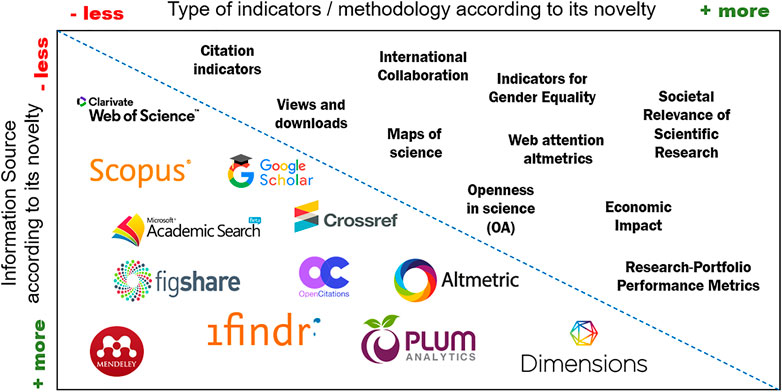
Рисунок 2.5.14. Информационные ресурсы-источники наукометрических данных
Источник: https://www.frontiersin.org/articles/10.3389/frma.2021.696470/full
В аналитических целях в соответствии с Рисунок 2.5.14 рассмотрены потенциальные наукометрические критерии. Одним из них является широко используемая база Clarivate Web of Science InCites indicators. Индексы базы InCites включают в себя следующие [51]:
· Science Citation Index Expanded (SCIE),
· Social Science Citation Index (SSCI),
· Arts&Humanities Citation Index (AHCI),
· Conference Proceedings Citation Index – Science (CPCI-S),
· Conference Proceedings Citation Index – Social Science & Humanities (CPCI – SSH),
· Book Citation Index – Science (BKCI-S),
· Book Citation Index – Social Sciences & Humanities (BKCI-SSH),
· Emerging Sources Citation Index (ESCI).
Одним из ключевых наукометрических критериев научной организации для прохождения стажировки по программе «500 ученых» может быть вхождение организации в топовые 25% в категориях: Академия (академические университеты и другие учреждения, специализирующиеся на сочетании образования и исследований), Академическая система (университетские системы и зонтичные организации, такие как Калифорнийский университет), или только категории Лаборатория (лабораторный комплекс, обеспечивающий контролируемые условия проведения научных и технологических исследований, экспериментов и измерений; часто обозначается как лаборатория в названии организации) и Научно-исследовательские институты (организации, которые в первую очередь занимаются исследованиями) [51].
Помимо инструмента InCites (Web of Science), широко используется аналитический инструмент SciVal (Elsevier). SciVal предоставляет стратегическую информацию для повышения конкурентоспособности организации в научно-исследовательской деятельности, который предлагает быстрый доступ к обзору, анализу и мониторингу результатов научной деятельности по 230 странам и 24 000 исследовательским организациям по всему миру, группам стран, организаций и исследователей, включающий модули: «Overview», «Benchmarking» и «Collaboration».
Имеется возможность адаптировать платформу в соответствии с конкретными потребностями определённой научной организации/учебного заведения, выбрав модули, наиболее соответствующие исследовательским целям. Также можно визуализировать результаты исследований организации, сравнивать их с аналогами и выявлять новые тенденции в исследованиях. Модульное решение SciVal предлагает информацию для поддержки стратегии исследований, оценки и успешного финансирования.
На основании проведенного анализа рекомендованы следующие критерии отбора с обоснованиями для научно-исследовательских организации в рамках международных стажировок (из них 5 наукометрических):
1. Количество публикаций (Publication count)
Количество публикаций исследовательской организации относится к общему количеству научных статей, рефератов и аналогичных материалов, которые были опубликованы ее членами. Это количество является важным исследовательским показателем, поскольку оно отражает результаты исследований и академическую активность организации. Более высокое количество публикаций обычно указывает на более активную исследовательскую среду, что может свидетельствовать о влиянии учреждения и его положении в научном сообществе. Он также может быть использован для измерения производительности исследователей и приверженности организации продвижению знаний в своей области.
2. Среднее количество цитирований на одну публикацию (Citations per Publication)
Количество цитирований на публикацию в SciVal показывает среднее влияние цитирования каждой публикации организации: сколько цитирований в среднем получили публикации этой организации за определенный год.
Это полезно для оценки среднего влияния публикаций на цитируемость и сравнение среднего влияния публикаций организаций разного размера в смежных дисциплинах, таких как исследовательские группы, работающие в аналогичной области исследований, или исследователь и наборы публикаций, принадлежащие этому исследователю.
3. H-5 index
Инструмент оценки научной продуктивности и влияния использует H-индекс, для которого применяются базы данных, такие как Google Scholar, Web of Science, и Scopus. H5-индекс учитывает публикации и цитирования за последние 5 лет, что позволяет следить за метрикой во времени. H-индекс организации определяется числом её публикаций, каждая из которых имеет цитирования не меньше своего порядкового номера. H5-индекс всегда использует данные за последние 5 лет, но не включает текущий год, пока он не завершится. Например, в январе 2020 года h5-индекс использует диапазон дат 2014–2018 годов, так как 2019 год не считается полным годом до июня 2020 года.
4. Field-Weighted Citation Impact (FWCI)
Field-Weighted Citation Impact (FWCI) в SciVal показывает, как количество цитирований публикаций организации соотносится со среднемировым уровнем для аналогичных работ. FWCI равный 1,00 означает соответствие среднемировому уровню, больше 1,00 - выше среднего (например, 2,11 означает на 111% выше), меньше 1,00 - ниже среднего (например, 0,87 означает на 13% ниже). Отраслевые средние значения используются для понимания ожидаемого количества цитирований для конкретного типа научных результатов.
5. Journal Impact Factor (JIF)
Импакт-фактор журнала (JIF) — это метрика, используемая для оценки влиятельности научного журнала в определенной области исследований. Он измеряется путем деления количества цитирований статей, опубликованных в журнале за последние два года, на общее количество статей, опубликованных в эти годы. Это важно, поскольку высокий импакт-фактор часто интерпретируется как признак качества и влиятельности журнала в его научной сфере. Использовать JIF следует с осторожностью, поскольку он не измеряет качество отдельных статей и может зависеть от таких факторов, как политика журнала и частота публикаций.
6. International Collaboration Index (%)
Международное сотрудничество в исследованиях оценивается по соавторству ученых из разных стран. В SciVal это измеряется через географическое сотрудничество, разделяемое на четыре типа: международное, национальное, институциональное и индивидуальное. Оценка сотрудничества проводится с учетом специфики отрасли, аналогично методологии расчета цитирования. Показатель сотрудничества, равный 1,00, соответствует среднемировому уровню, выше 1,00 указывает на активное сотрудничество, а ниже 1,00 - на уровень ниже среднего.
7. Наличие патентов за последние года (2020 -2022)
Этот показатель отражает количество патентов, цитирующих научные результаты организации. Он показывает взаимосвязь между патентами и научными работами: один патент может ссылаться на несколько научных результатов, и наоборот, несколько патентов могут ссылаться на одну научную работу. Например, если 200 патентов цитируют статьи Университета Афины за последние пять лет, показатель количества патентов равен 200. Этот показатель важен для оценки влияния исследований на разработку продуктов и их экономический эффект.
8. Количество и сумма грантов Awards Count & Value (USD)
Объем грантов относится как к количеству, так и к стоимости присужденных грантов. Объем грантов учитывает совокупную стоимость премий за период действия премии. Другими словами, учитывается общая стоимость, присужденная на момент присуждения, а не стоимость (подлежащая) расходованию в какой-либо конкретный период времени.
Объем грантов отображается либо в виде количества грантов, либо в виде стоимости грантов в долларах США. Стоимость грантов в долларах США рассчитывается с использованием исторических обменных курсов, предоставленных Федеральной резервной системой США. Присужденные гранты охватывают года, начиная с 2009 года по настоящее время.
Предметные области присваиваются грантам с использованием технологии Fingerprint®. Каждый грант может быть присвоен нескольким предметным областям. Гранты присваиваются учреждениям на основе принадлежности главного исследователя (PI) к Scopus на момент присуждения гранта. Страны присваиваются на основе страны, выдавшей грант. При расчете объема присуждаемых грантов SciVal учитывает как учреждение, так и страну присуждаемого гранта. Когда объем присуждаемых грантов рассчитывается на уровне страны, для определения присвоенной страны используется принадлежность к Scopus.
Этот показатель полезен для понимания, какой объем финансирования основные исследователи организации получают от различных финансирующих органов и сравнения аналогичных учреждений (размер и страну), чтобы понять, как организация сравнивается по объему финансирования премий с аналогичными организациями.
9. Наличие современных лабораторий
Одним из не наукометрических критерий предлагается - оценка научно-инфраструктурных возможностей. Это анализ наличия и качества лабораторного оборудования, вычислительных установок, доступности библиотечных фондов и прочих ресурсов. Показатель может учитывать доступные научные инструменты и ресурсы, включая передовые лабораторные комплексы и технологическое оборудование, предоставляемые стажерам для проведения их исследовательских работ.
10. Менторство/Scientific guidance
Научное руководство больше связано с качественными аспектами исследований, например, с наставничеством и руководством, предоставляемым опытными исследователями. Количественно измерить научное руководство сложно, так как оно включает в себя субъективные и качественные аспекты поддержки исследований и наставничества, которые не так легко количественно оценить, как другие стандартные исследовательские метрики.
Научное руководство обычно означает экспертные советы или инструкции в контексте научных исследований, экспериментов или учебных программ. Такое руководство может исходить от опытных ученых, научных руководителей или специалистов отрасли и направлено на обеспечение точности, этичности и эффективности научной работы.
Ниже приведена сравнительная таблица трех научных организаций, а именно Исследования рака Великобритания (Cancer Research UK), Агентство по науке, технологиям и исследованиям Сингапура (Agency for Science, Technology and Research Singapore) и Совет научных и технологических исследований Турции (Scientific and Technological Research Council of Turkey) и по вышеперечисленным наукометрическим критериям (Таблица 3).
Таблица 2.5.10. Сравнительная таблица трех научных организаций по (не) наукометрическим критериям
|
№ |
Criteria |
Cancer Research UK |
Agency for Science, Technology and Research, Singapore |
Scientific and Technological Research Council of Turkey |
World statistics, OECD countries (24 300 Institutions in 2022 /average) |
|
|
|
|
|
|
|
|
|
|
|
|
|
|
|
|
|
|
|
|
|
|
1 |
Publication count |
169,033 |
6,611 |
- |
|
|
2 |
Citations per Publication |
20.7 |
14.0 |
4,2 |
- |
|
3 |
H-5 index |
176 |
176 |
38 |
- |
|
4 |
Field-Weighted Citation Impact (FWCI) |
2.74 |
1.91 |
0.87 |
1 |
|
5 |
Journal Impact Factor (JIF) |
Q1, IF=9.0 (2022) |
N/A |
IF = 2.9 (2022) 11 journals, e.g. The Turkish Journal of Agriculture and Forestry |
- |
|
6 |
International Collaboration Index (%) |
64.3% |
67.3% |
28.9% |
33.5% |
|
7 |
Наличие патентов |
|
|
|
|
|
|
2020 |
344 |
441 |
16 |
~ 43416 |
|
|
2021 |
186 |
4 |
~ 20966 |
|
|
|
2022 |
30 |
39 |
1 |
~ 4617 / 24 300 = 0.19 |
|
8 |
Количество и сумма грантов Awards Count & Value (USD) |
31 ~ 31M USD (2020) 32 ~ 47M USD (2021) 28 ~ 203M USD (2022) |
0 |
11 ~ 129M USD 10 ~ 142M USD - |
26.581.464.735 USD (2020) 24.022.045.318 USD (2021) 14.130.309.981 USD (2022) |
|
9 |
Наличие современных лабораторий |
+ |
+ |
+ |
|
|
10 |
Менторство/Scientific guidance |
+ |
+ |
+ |
|
В институциональном сравнительном отчете, охватывающий период с 1996 по 2023 год по данным Scopus, представлены различные академические и научно-исследовательские учреждения по следующим наукометрическим показателям:
1) научная деятельность (общее количество документов, опубликованных учреждением);
2) влияние цитируемости по областям (FWCI) (оценивает влияние цитируемости исследования учреждения, нормализованное по предметной области, году публикации и типу документа);
3) результат в верхних процентилях цитирования (оценивает долю результатов исследований учреждения, попадающих в верхние процентили цитирования во всем мире);
4) публикации в рейтингах лучших журналов по версии CiteScore (определяет количество публикаций в журналах с высоким рейтингом CiteScore);
5) влияние международного сотрудничества (анализирует масштабы и влияние международных совместных исследований).
Каждый показатель предназначен для предоставления комплексного представления об эффективности и влиянии исследований учреждения.
В ходе исследования были также проанализированы продуктивность исследований и глобальный рейтинг цитируемости ученого. Данные собираются из однострочной базы данных Web of Science. В наукометрии главным критерием является рейтинг научных центров: это темпы научного производства, результаты исследований по годам, влиянию цитирования на местном и глобальном уровне, выдающимся авторам и их общим результатам.
Для оценки тенденций в науке Казахстана произведем корреляционные расчеты по статическим данным Scopus и сравним их со статистическими данными НИИ стран OECD за последние три года (Таблица 2.5.11. Статистическая корреляция наукометрических критериев научно-исследовательских учреждений Казахстана и стран OECD, 2020-2023 годыТаблица 2.5.11).
Из данных таблицы видно, что в Казахстане, как в странах OECD, наблюдается довольно сильная зависимость между показателями цитирования и научными результатами (0,93 и 0,94 соответственно), то есть количество постепенно перерастает в качество. Также в Казахстане отмечено положительная корреляция между ростом количества статей (Scholarly Output, growth %) и влиянием цитируемости исследования учреждений (Field-Weighted Citation Impact) в отличии от стран OECD (0,10 и минус 0,01 соответственно), что свидетельствует о наличии потенциала наших научно-исследовательских организаций. Вместе с тем, зависимость Citations per Publication и Field-Weighted Citation Impact существенно различается: в Казахстане – 0,73, в OECD – 0,92, что показывает качественный вектор, в котором отечественным научно-исследовательским организациям следует приложить большие усилия. Как и в странах OECD, в Казахстане рост научных результатов (Scholarly Output, growth %) отрицательно связан с цитированием и количеством автором (минус 0,05 и минус 0,04 соответственно).
Таблица 2.5.11. Статистическая корреляция наукометрических критериев научно-исследовательских учреждений Казахстана и стран OECD, 2020-2023 годы
|
|
Scholarly Output |
Scholarly Output (growth %) |
Citations |
Authors |
Citations per Publication |
|
|||||||||||||||
|
KZ |
OECD |
KZ |
OECD |
KZ |
OECD |
KZ |
OECD |
KZ |
OECD |
|
|||||||||||
|
Scholarly Output (growth %) |
-0,04 |
-0,04 |
1 |
1 |
|
|
|
|
|||||||||||||
|
Citations |
0,93 |
0,96 |
-0,04 |
-0,05 |
1 |
1 |
|
|
|
||||||||||||
|
Authors |
0,97 |
0,98 |
-0,06 |
-0,04 |
0,88 |
0,94 |
1 |
1 |
|
|
|||||||||||
|
Authors (growth %) |
-0,03 |
-0,04 |
0,91 |
0,90 |
-0,02 |
-0,04 |
-0,05 |
-0,03 |
|
|
|||||||||||
|
Citations per Publication |
0,31 |
0,11 |
-0,02 |
-0,07 |
0,48 |
0,24 |
0,31 |
0,10 |
1 |
1 |
|
||||||||||
|
Field-Weighted Citation Impact |
0,25 |
0,11 |
0,10 |
-0,01 |
0,34 |
0,24 |
0,25 |
0,10 |
0,73 |
0,92 |
|||||||||||
Источник: рассчитано по данным Scopus
Таким образом, статистический анализ и расчеты корреляции наукометрических критериев научно-исследовательских организаций показал, что тренды публикационной активности отечественные НИИ в целом совпадают с трендами стран OECD, однако имеются определенные «отставания» в контексте интенсивности и качества публикаций.
Кейсы по казахстанским вузам, в составе которых имеются научно-исследовательские учреждения, и зарубежным НИИ (отобранным для демонстрации примера), показывают следующие тренды.
|
Казахстанские вузы (в составе которых есть НИИ) |
Зарубежные НИИ |
|
1. Научная деятельность (публикации результатов научных исследований) Scholarly Output |
|
|
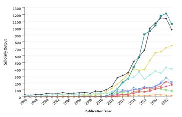 |
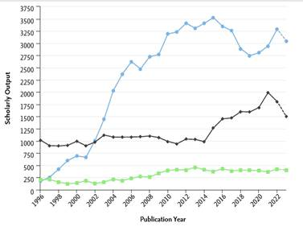 |
|
2. FWCI |
|
|
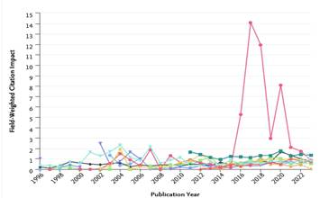 |
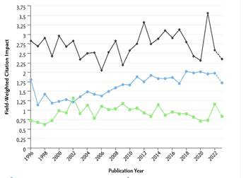 |
|
3. Результат в верхних процентилях цитирования |
|
|
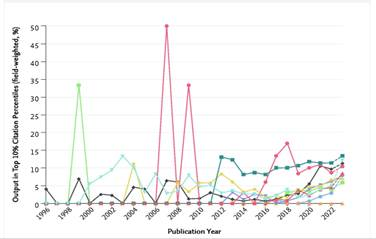 |
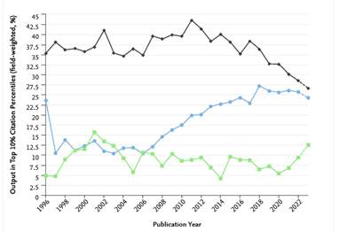 |
|
4. Публикации в рейтингах лучших журналов по версии CiteScore |
|
|
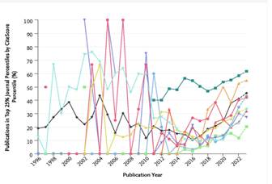 |
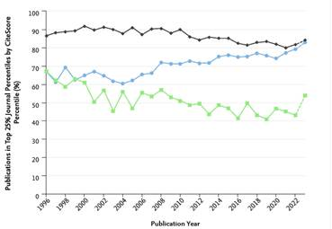 |
|
5. Влияние международного сотрудничества |
|
|
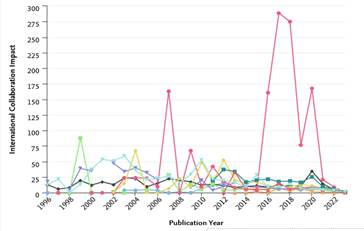 |
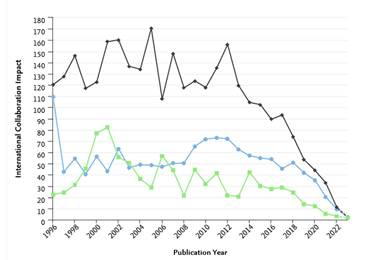 |
|
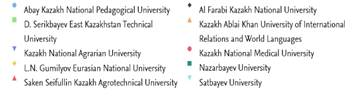 |
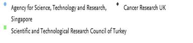
|
Рисунок 2.5.15. Динамика наукометрических показателей казахстанских учреждений с 1996 по 2023 год по данным Scopus
Следует отметить, что по 4 из 5 предлагаемых наукометрических критериев лидирует Cancer Research UK. Agency for Science, Technology and Research Singapore многие годы существенно опережает сопоставимые НИИ по критерию Scholarly Output, Scientific and Technological Research Council of Turkey отличается стабильностью во всех показателях.
Таким образом, в гипотетической ситуации выбора наилучшего среди представленных трех НИИ для зарубежной стажировки безусловным лидером стал бы Cancer Research UK, на втором месте – НИИ из Сингапура, и тройку замыкал бы Scientific and Technological Research Council of Turkey.
Также произведем критический анализ казахстанских вузов, имеющих в своем составе научно-исследовательские институты, по предлагаемым критериям.
Неизменное лидерство по первому критерию - Scholarly Output (указывает на «плодовитость» учреждения, то есть сколько публикаций данного учреждения были проиндексированы в Scopus за искомый период времени) - показывают, Al Farabi Kazakh National University, Nazarbayev University и L.N. Gumilyov Eurasian National University (от 400 до 1200 публикаций за период), остальные университеты – менее 400, два университета - D. Serikbayev East Kazakhstan Technical University и Kazakh Ablai Khan University of International Relations and World Languages – менее 100 за период с 1996 по 2023 год.
По второму критерию - влияние цитируемости по областям (FWCI)[1] – наибольшую относительную эффективность демонстрировал Kazakh National Medical University 2014 по 2021 годы, более 1 - Nazarbayev University, L.N. Gumilyov Eurasian National University, D. Serikbayev East Kazakhstan Technical
University, Saken Seifullin Kazakh Agrotechnical University; показатели остальных учреждений - от 0 до 1.
Третий критерий - результаты в процентах высшего цитирования, то есть в какой степени публикации учреждения присутствует в 10% наиболее цитируемых процентилей в Scopus – наибольшую активность проявили Al Farabi Kazakh National University, Kazakh National Medical University, Nazarbayev University и Satbayev University, причем следует отметить, что все учреждения существенно активизировались в постпандейминый период и демонстрируют устойчивый рост.
Сравнительный анализ года публикации и публикаций в 25% лучших процентилей журналов по версии CiteScore[2] – четвертый критерий – показывает, что если до 2012 года наблюдался хаотичная динамика в данной показателе, то после 2012 года начался его стабильный рост. Лидирующие позиции удерживает Nazarbayev University (50-60), Kazakh Ablai Khan University of International Relations and World Languages (40-55); тройка вузов - Al Farabi Kazakh National University, Kazakh National Medical University, Satbayev University – также стремятся к показателю 50.
В соответствии с пятым критерием[3] наиболее плодотворным казахстанским учреждением в контексте международного сотрудничества является Kazakh National Medical University.
Таким образом, применение пяти наукометрических критериев к казахстанским научно-исследовательским вузам позволило выявить безусловных лидеров - Kazakh National Medical University (2 критерия), Nazarbayev University (3 критерия). Следует отметить неэффективность практически всех вузов по показателю международного сотрудничества, который имеет нисходящий тренд с 2020 года, что подчеркивает необходимость безотлагательных мер активизации международного научного сотрудничества, в том числе посредством интенсификации научных стажировок.
2.5.5 Проекты ресурсных и регуляторных инструментов прохождения стажировки ученых по программе «500 ученых»
Таблица 12. Сравнительная таблица к проекту приказа Министра науки и высшего образования Республики Казахстан «О внесении изменений в приказ и.о. Министра науки и высшего образования Республики Казахстан от 18 августа 2023 года № 422 «Об утверждении Правил отбора претендентов и прохождения научных стажировок»
|
№ п/п |
Структурный элемент |
Действующая редакция |
Проект регуляторных инструментов |
Проект ресурсных инструментов. (Более подробная информация в разрезе средств раписанна в таблице ниже) |
Обоснование |
|
1 |
2 |
3 |
4 |
5 |
6 |
|
Правила отбора претендентов и прохождения научных стажировок |
|
||||
|
1 |
Глава 1 Пункт 2 подпункт 3
|
работодатель – юридическое лицо Республики Казахстан, его филиал, представительство, с которым работник состоит в трудовых отношениях по осуществлению трудовой деятельности на территории Республики Казахстан; |
работодатель – юридическое лицо Республики Казахстан, его филиал, представительство, с которым работник состоит в трудовых отношениях по осуществлению трудовой деятельности на территории Республики Казахстан; лицензированные и аккредитованные организации осуществляющая научно исследовательскую деятельность по приоритетным направлениям развития науки утвержденной ВНТК.
|
Не требуются дополнительные финансовые и кадровые ресурсы. Дополнительные критерии отбора претендентов, предлагаемые в данном отчете, не потребует дополнительных кадров, так как имеющиеся комиссии могут дать оценку документам претендентов. Финансирование будет осуществлено в рамках имеющихся заработных плат у сотрудников. |
Претенденты направляемые на научную стажировки должны представлять научные интересы организаций (работодатель), которые являются лицензированными и аккредитованными организациями осуществляющие научно исследовательскую деятельность по приоритетным направлениям развития науки утвержденной ВНТК. |
|
2 |
Глава 1 Пункт 2 подпункт 6
|
экспертная комиссия – консультативно-совещательный орган при рабочем органе Республиканской комиссии по подготовке кадров за рубежом, осуществляющий персональное собеседование с претендентом, участвующим в конкурсе на прохождение научной стажировки (далее – конкурс) |
экспертная комиссия – консультативно-совещательный орган при рабочем органе Республиканской комиссии по подготовке кадров за рубежом, осуществляющий персональное собеседование с претендентом, участвующим в конкурсе на прохождение научной стажировки (далее – конкурс). Состав экспертной комиссии должен быть регламентирован; в составе должны принимать участие соответствующие эксперты, обладающие специальными познаниями.
|
|
Члены экспертной комиссии должны соответствовать определенными критериями включая зарубежное образование на уровне PhD или доктора по профилю, или прошедшие научную стажировку, имеющие международный научно-исследовательский опыт, владеющий иностранным(и) языком(ками), или опыта работы в качестве руководителя международных/отечественных научных проектов/программ по направлению наук. Претендент и член экспертной комиссии не должны быть аффилированы (не иметь совместные публикаций, места работы, выполнение проектов, родственные связи). |
|
|
Глава 1 Пункт 3
|
Прохождение научной стажировки победителем конкурса осуществляется в целях повышения квалификации научных, научно-технических кадров по избранному направлению научных исследований сроком от 3 (три) до 12 (двенадцать) месяцев в зарубежных организациях, входящих в список ведущих зарубежных организаций высшего и (или) послевузовского образования, научных центров и иных организаций, рекомендуемых для прохождения научных стажировок (далее – список), утверждаемый рабочим органом, а также иных зарубежных организаций, определяемых в индивидуальном порядке по решению рабочего органа, согласно пункту 11 настоящих Правил. |
Прохождение научной стажировки победителем конкурса осуществляется в целях повышения квалификации научных, научно-технических кадров по избранному направлению научных исследований сроком от 3 (три) до 12 (двенадцать) месяцев в зарубежных организациях, входящих в список ведущих зарубежных организаций высшего и (или) послевузовского образования, научных центров, соответствующие наукометрическим критериям (предлагаемые в проекте выработки рекомендаций) и иных организаций, рекомендуемых для прохождения научных стажировок (далее – список), утверждаемый рабочим органом, а также иных зарубежных организаций, определяемых в индивидуальном порядке по решению рабочего органа, согласно пункту 11 настоящих Правил. |
|
В РК не имеются требования к наукометрическим критериям зарубежных научных организации, принимающие претендентов. |
|
2 |
Глава 2 Пункт 8
|
8. Претендентом на прохождение научной стажировки является гражданин Республики Казахстан имеющий: 1) ученую степень доктора наук, кандидата наук, степени доктора философии (PhD), доктора по профилю, магистра;
2) стаж непрерывной фактической работы последние 12 (двенадцать) месяцев в выбранной области специализации научного исследования в аккредитованных субъектах научной и (или) научно-технической деятельности, являющихся юридическими лицами, с подтверждением начисления обязательных пенсионных отчислений за весь требуемый период с учетом оплачиваемого ежегодного трудового отпуска, за исключением лиц, освобожденных от уплаты обязательных пенсионных взносов в единый накопительный пенсионный фонд в соответствии с пунктом 3 статьи 248 Социального кодекса Республики Казахстан. В стаж непрерывной фактической работы также засчитываются отпуск по беременности и родам, отпуск по уходу за ребенком, наступление временной нетрудоспособности, а также перевод с одной образовательной программы на другую из одной организации высшего и (или) послевузовского образования в другой; 3) безусловное приглашение (за исключением финансовых условий) зарубежной организации, входящей в список, принимающей претендента на научную стажировку в соответствии с проводимым научным исследованием; 4) действительный официальный сертификат на знание государственного и иностранного языков на уровне, соответствующем установленным в приложении 4 к настоящим Правилам;
5) научные результаты (статьи или обзоры, индексируемые в международных базах данных Web of Science, Scopus или в отечественных или в зарубежных научных изданиях, рекомендованных уполномоченным органом, осуществляющим контрольные функции в сфере науки и высшего образования (далее – уполномоченный орган)) и (или) международной заявки Патент Корпорейшн Трэти (Patent Cooperation Treaty).
5) Граждане Республики Казахстан, не выполнившие договорные обязательства по осуществлению непрерывной трудовой деятельности по выбранному направлению научного исследования, полученному в рамках прохождения научной стажировки, а также лица, прошедшие стажировку в рамках программы "Болашак" и не выполнившие договорные обязательства по трудовой отработке, не допускаются к участию в конкурсе для прохождения научной стажировки. Прохождение научной стажировки осуществляется однократно.
9. Претенденты для участия в конкурсе представляют администратору следующие документы: 4) оригинал и копию документа о наличии ученой степени доктора наук, кандидата наук, степени доктора философии (PhD), доктора по профилю, магистра (оригиналы после сверки возвращаются претенденту). ….
5) программу прохождения научной стажировки, составленную в соответствии с приложением 5 к настоящим Правилам, утверждаемую работодателем и согласованную зарубежной организацией, принимающей на стажировку, входящей в список;
….
10) копии документов, подтверждающих безусловное приглашение за исключением финансовых условий) зарубежной организации, принимающей на стажировку претендента, с указанием проводимого научного исследования, сроков, стоимости (с расшифровкой расчетов) прохождения научной стажировки с нотариально засвидетельствованными переводами на государственный или русский язык;
…..11) список научных результатов (статьи или обзоры, индексируемые в международных базах данных Web of Science, Scopus и (или) в отечественных или зарубежных научных изданиях, рекомендованных уполномоченным органом) и (или) международную заявку Патент Корпорейшн Трэти (Patent Cooperation Treaty) утвержденные работодателем; |
8. Претендентом на прохождение научной стажировки является гражданин Республики Казахстан имеющий: 1) ученую или академическую степень доктора наук, кандидата наук, степени доктора философии (PhD), доктора по профилю, магистра;
2) стаж
3) условное приглашение, условием которого является финансовой оплата зарубежной организации, входящей в список, принимающей претендента на научную стажировку в соответствии с проводимым научным исследованием;
4) действительный официальный сертификат на знание государственного и иностранного языков на уровне, соответствующем установленным в приложении 4 к настоящим Правилам;
5) научные результаты (статьи или обзоры, индексируемые в международных базах данных Web of Science, Scopus или не менее трех (3) в отечественных или в зарубежных научных изданиях, рекомендованных уполномоченным органом по теме специализации; новые знания или решения, полученные надлежащими научными методами и средствами в ходе выполнения научной и (или) научно-технической деятельности и зафиксированные на любом информационном носителе, внедрение научных разработок и технологий в производство, а также модели, макеты, образцы новых изделий, материалов и веществ) и (или) не менее 3 патентов на изобретение/ на полезную модель
5) Граждане Республики Казахстан, не выполнившие
договорные обязательства по осуществлению
Прохождение научной стажировки осуществляется
9.Претенденты для участия в конкурсе подают заявку в соответствии со своим базовым образованием (бакалавриат) и/или по направления научно опубликованных работ и представляют администратору следующие документы: 4) оригинал и копию документа о наличии ученой или академической степени доктора наук, кандидата наук, степени доктора философии (PhD), доктора по профилю, магистра (оригиналы после сверки возвращаются претенденту).
….5) программу прохождения научной стажировки, составленную в соответствии с приложением 5 к настоящим Правилам, утверждаемую работодателем и согласованную с научным руководителем стажировки зарубежной организацией, принимающей на стажировку, входящей в список;
….
10) копии документов, подтверждающих условное приглашение при этом единственное условие - финансовых условий) зарубежной организации, принимающей на стажировку претендента, с указанием проводимого научного исследования, сроков, стоимости (с расшифровкой расчетов) прохождения научной стажировки с нотариально засвидетельствованными переводами на государственный или русский язык;
….. 11) список научных результатов (статьи или обзоры, индексируемые в международных базах данных Web of Science, Scopus и (или) в отечественных или зарубежных научных изданиях, рекомендованных уполномоченным органом) и (или) международную заявку Патент Корпорейшн Трэти (Patent Cooperation Treaty) и (или) не менее 3 патентов на изобретение/ на полезную модель, утвержденные работодателем;
|
|
Степень магистра является академической.
Имеются случаи на практике, когда претендент, подающий на научную стажировку, не соответствует по данному требованию, что ограничивает его участие. К примеру, научные сотрудники, участвующие в проектах по ГФ, ПЦФ в связи с традиционным поздним финансированием теряют непрерывность и соответственно могут не отвечать формальным требованиям.
Одним из условий получения условного приглашения должно являться только финансовая часть. Данное обстоятельство будет свидетельствовать, что претендент получая приглашения полностью соответствует предъявляемым принимающей стороной требованиям
Рекомендуется подтвердить научный потенциал претендента наличием не менее трех (3) научных публикаций Таким образом, за счет имеющихся публикаций будет установлено соответствие его заявлению на научную стажировку. В соответствии с ЗРК «О науке» ученым является «физическое лицо, осуществляющее научные исследования и получающее результаты научной и (или) научно-технической деятельности». В свою очередь, «результат научной и (или) научно-технической деятельности - новые знания или решения, полученные надлежащими научными методами и средствами в ходе выполнения научной и (или) научно-технической деятельности и зафиксированные на любом информационном носителе, внедрение научных разработок и технологий в производство, а также модели, макеты, образцы новых изделий, материалов и веществ». Представляется, что в течении 12 месяцев получение подобных результатов маловероятно.
Обоснование по данному доводу смотреть выше. Касательно прохождение стажировки не чаще 1 раза в 5 лет позволит дополнить знания на промежуточных этапах науки. И позволит создавать более конкурентоспособные научные разработки. Кроме того, ограничение в 5 лет позволит оценить ранее полученные знания и навыки, а также снизить коррупционный риск по включению одного и того же без результативного ученого.
Данная норма позволит направлять ученых в соответствии с их специальности и направлением его исследованием.
Необходимо вести учет научных руководителей стажировок для полноценной и объективной оценки эффективности затраченных средств. С учетом важности репутационных рисков зарубежных ученых повысится их ответственность в наборе претендетов. Таким образом, приглашения на стажировки будут выдаваться зарубежными научными организациями более качественнее.
Описано выше.
Научные патенты на изобретения и полезные модели приравнены к публикациям в изданиях рекомендованных уполномоченных органом
|
|
4 |
Подпункт 5) пункт 21 |
21. Победитель конкурса в течение 60 (шестьдесят) календарных дней со дня принятия Республиканской комиссией решения о присуждении научной стажировки заключает с администратором договор о прохождении научной стажировки (далее – договор) по типовой форме, установленной в приложении 6 к настоящим Правилам. Договор в обязательном порядке содержит следующее: … 5) условие об обязательном возвращении победителя конкурса в Республику Казахстан после завершения прохождения научной стажировки за рубежом и осуществлении непрерывной трудовой деятельности по выбранному направлению научного исследования не менее 3 (три) лет у работодателя, по заявке которого победитель конкурса был направлен на прохождение научной стажировки;
|
21. Победитель конкурса в течение 60 (шестьдесят)
календарных дней со дня принятия Республиканской комиссией решения о
присуждении научной стажировки заключает с администратором договор о Договор в обязательном порядке содержит следующее: …
5) условие об обязательном возвращении победителя конкурса в Республику Казахстан после завершения прохождения научной стажировки за рубежом и осуществлении непрерывной трудовой деятельности по выбранному направлению научного исследования пропорционально сроку стажировки: один месяц стажировки приравнивается к трем месяцам отработки, по заявке которого победитель конкурса был направлен на прохождение научной стажировки. |
|
Согласно Правилам, продолжительность научной стажировки варьируется 3-12 месяцев, но срок отработки един – не менее 3-х лет. Таким образом, государство затрачивает бюджетные средства на научные стажировки разной длительностью, при этом отработка для всех разная. Предлагаемая редакция представляется более справедливым решением. Кроме того, необходимо предусмотреть обязательный трансфер инновационных технологий и/или наукоемких продуктов, в виде подтверждающего документа от одной из патентных организаций 30 стран, занимающих лидирующие места в последнем рейтинге глобального индекса инноваций на изобретения. |
|
5 |
Пункт 22 |
22. В случаях незаключения договора в сроки, указанные в пункте 21 настоящих Правил, предоставления заведомо ложных сведений для участия в конкурсе, невыполнения программы прохождения научной стажировки, неосуществления по возвращению с научной стажировки непрерывной трудовой деятельности (отработки), неисполнения или ненадлежащего исполнения своих обязательств по договору, администратором в установленном порядке инициируется рассмотрение Республиканской комиссией вопроса о лишении научной стажировки путем возмещения расходов, затраченных на победителя конкурса со дня вынесения Республиканской комиссией решения о присуждении научной стажировки, включая оплату неустойки (штрафа).
|
22. В случаях незаключения договора в сроки, указанные в пункте 21 настоящих Правил, предоставления заведомо ложных сведений для участия в конкурсе, обнаружение фактов ретракции статей или обзоров, невыполнения программы прохождения научной стажировки, неосуществления по возвращению с научной стажировки непрерывной трудовой деятельности (отработки), неисполнения или ненадлежащего исполнения своих обязательств по договору, администратором в установленном порядке инициируется рассмотрение Республиканской комиссией вопроса о лишении научной стажировки путем возмещения расходов, затраченных на победителя конкурса со дня вынесения Республиканской комиссией решения о присуждении научной стажировки, включая оплату неустойки (штрафа). |
|
С 2018 по 2022 год существенно увеличилось количество казахстанских ученых, статьи которых были отозваны по разным причинам. В связи с тем, что наличие статей, индексируемых в международных базах данных, является обязательным условием участия в отборе, необходимо учесть данный риск. |
|
6 |
Пункт 1 Приложения 4 |
Уровень знания английского языка IELTS: 5.0 из 9.0 |
Уровень знания английского языка IELTS: 6.0 и более (по каждому BAND). При этом уровень знания иных зарубежных языков необходимо скоррелировать. |
|
Данная норма позволит претенденту качественно воспринимать научную литературу и материал представляемый руководителем стажировки. Более того для написания академических и научных отчетов необходимо соответствующие уровень знания. |
Таблица 13. Проект рассчетов с обоснованиями прохождения стажировки ученых по программе «500 -ученых»*
|
№ |
Виды расходов на одного стажера на один месяц** |
Великобритания |
Сингапур |
Турция |
США |
Чехия |
|
1 |
Авиабилет |
700-1000 GBP/ 886-1266USD |
1400-1500 USD |
750-890 USD |
800-1800 USD |
200-500 USD |
|
2 |
Аренда жилья (комната в общежитии) |
664-848 GBP/841-1073 USD |
800-1900 USD |
600 USD |
1000-2500 USD |
400-800 USD |
|
3 |
Коммунальные расходы |
80-140 GBP/101-177USD |
100-200 USD |
43-70 USD |
200-300 USD |
250-300 USD |
|
4 |
Питание |
196-305 GBP/248-387USD |
250–600 |
200-300 USD |
400-500 USD |
250-300 USD |
|
5 |
Общественный транспорт |
54-103 GBP/68-130USD |
240 USD |
200-250 USD |
70-100 USD |
50-70 USD |
|
6 |
Иные расходы (телефонная связь/ членство в спортивный клуб) |
33-38 GBP/42-48USD |
25-70 USD |
35 USD |
360-1200 USD |
30-40 USD |
|
7 |
Расходы на визу |
490 GBP/620USD |
92 USD |
50 USD |
185 USD |
110 USD |
|
8 |
Расходы на медстраховку (за 1 год) |
470 GBP/606USD |
1 600-2 400 USD |
70 USD |
1500-3000 USD |
1000-2000 USD |
|
9 |
Расходы на стажирование/обучение и книжные материалы (в зависимости от приглашающей стороны и типа исследования (например, расходные материалы, реактивы и т.п.). (за 1 год) |
9 000-30 000 GBP/ 11 393-37 975 USD |
13 000– 38 000 USD |
8000-25000 USD |
900-1300 USD |
220-620 USD |
|
10 |
Иные расходы (интернет) |
20-30 GBP |
$25-40 USD |
10 USD |
100 USD |
35 USD |
|
11 |
Депозит на жилье (возвращаемый) |
1000-1300 |
800-1900 USD |
600 USD |
2000-5000 USD |
1600-2400 USD |
* расчет на одного ученого
** из разных источников
ЗАКЛЮЧЕНИЕ. Ряд принятых государством мер в сфере развития научного потенциала привел к позитивным сдвигам, в том числе к росту продуктивности казахстанской исследовательской сферы. Все большую популярность набирает краткосрочная мобильность, предполагающая «циркуляцию» научных кадров в процессе научной стажировки в ведущих научно-исследовательских организациях.
На основании изучения успешного международного опыта в контексте наиболее результативных программ научных стажировок (США, страны ЕС, Великобритания, Австралия, Япония, Китай и др.) были сформулированы основные характеристики, организационные стандарты, ключевые критерии и требования зарубежных программ научных стажировок по уровню образования, языку, материалам для применения, квалификационным требованиям, продолжительности, доступности и др. В соответствии с изученным опытом были выработаны рамочные рекомендации по изменению критериев прохождения стажировки по программе «500 ученых», применение которых будет способствовать расширению охвата кандидатов, усилению требований по языку, уточнению компонентов стажировки и пр. Также были выработаны общие и специфические критерии и требования к научным организациям, позволяющие эргономично определить топ организаций, максимально адекватных современным запросам со стороны ученых. Важным моментом в отборе является применение выработанной системы наукометрических критериев (8 количественных и 2 качественных), включающих в себя зарекомендованные аналитические инструменты авторитетных организаций в сфере наукометрических исследований, а именно: количество публикаций (Publication count),среднее количество цитирований на одну публикацию (Citations per Publication), H-5 index, Field-Weighted Citation Impact (FWCI), Journal Impact Factor (JIF), International Collaboration Index (%), наличие патентов за последние года (2020 -2022), количество и сумма грантов Awards Count & Value (USD), наличие современных лабораторий, менторство (Scientific guidance).
В целях апробации были приведены статистические расчеты и кейсы на примере казахстанских и зарубежных научно-исследовательских организаций, которые позволили выявить актуальные тренды.
На основании проведенного анализа в процессе исследования разработан ряд проектов ресурсных и регуляторных инструментов прохождения стажировки ученых по программе «500 ученых», с указанием целеполагания, расчетной базы и соответствующего инструментария достижения.
[1] Влияние цитирования на основе поля (FWCI) показывает, как количество цитирований, полученных публикаций учреждения сравнивается со средним количеством цитирований, полученных всеми другими аналогичными публикации в Scopus. FWCI 1,00 указывает на то, что публикации учреждения цитировались.
[2] Вычисляется процент публикаций в ведущих процентилях журналов использование только публикаций со значением CiteScore Percentile, SNIP или SJR. Публикации в Top Journal Percentiles указывает на степень, в которой публикации учреждения присутствует в топ-25% самых цитируемых журналов в Scopus по процентилю CiteScore. Пороговые значения берутся непосредственно из значений CiteScore Percentile, которые рассчитываются Scopus. A журнал получает процентиль CiteScore для каждого ASJC, к которому он относится. SciVal всегда использует метод максимально релевантный процентиль CiteScore, который диктуется фильтром предметной области.
[3] По количеству цитирований на публикацию учреждения, созданного в рамках международного сотрудничества.